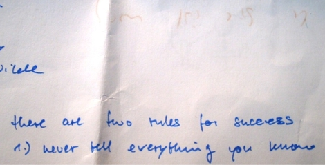
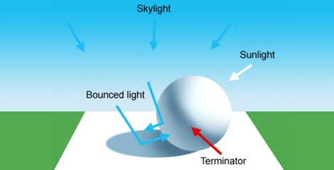
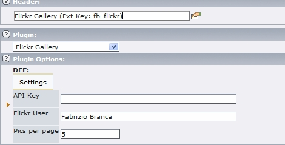

Lichtspiele

Geniale Photos: http://www.lightmark.de/overview.htm
Da kann ich leider nicht ganz mithalten: picasaweb.google.com/vcpbrf/Sommerfahrt2007/photo
Foto-Portfolio

Unter "Fotos" habe ich nun mit Hilfe des kostenlosen Simpleviewers von Airtight Interactive ein kleines einfaches Foto-Portfolio eingerichtet. Hier gibt es einige Fotos von mir zu sehen, die in den letzten Jahren bei den verschiedensten Gelegenheiten entstanden sind. Und wie immer freue ich mich na…
Tutorial zu \"Licht\"

Ein gutes 7-teiliges Tutorial (wovon bis jetzt leider nur die ersten vier Teile online sind) zum Thema "Licht" gibt es bei Itchy Animation.
TYPO3-Extension: Flickr Gallery

Nachdem ich schon lange nach einer netten Fotogalerie für TYPO3 gesucht habe, und Fabian Fischer seine Galerie fflickrgallry 1.0, die er für die Webseite der Band Shy Guy At The Show programmiert und unter der GPL veröffentlicht hat, habe ich daraus eine TYPO3-Extension gebastelt.
Die Installation…
Optische Illusion fotografiert

Bei Ehrensenf habe ich die Schablonen zum Basteln von optischen Illusionen gefunden. Nicht dass ich zu viel Zeit hätte, aber das musste jetzt mal sein :)
Am Schatten auf dem Foto erkennt man vielleicht den Trick wie sowas funktioniert. Besonders interessant wird das Fotografieren von dem Gebastelt…